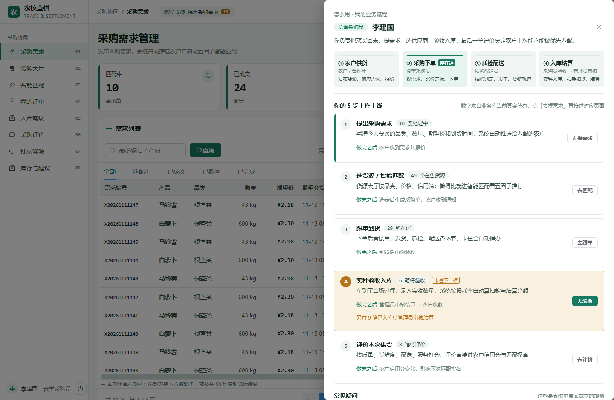
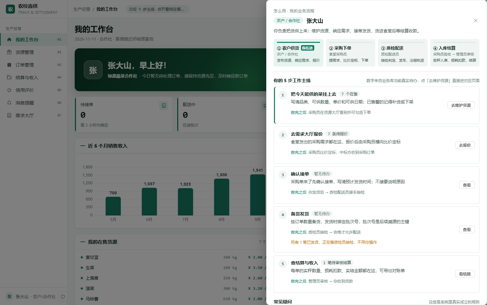
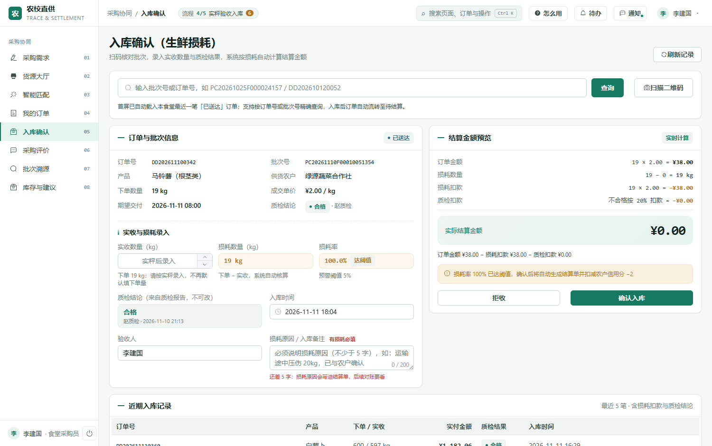
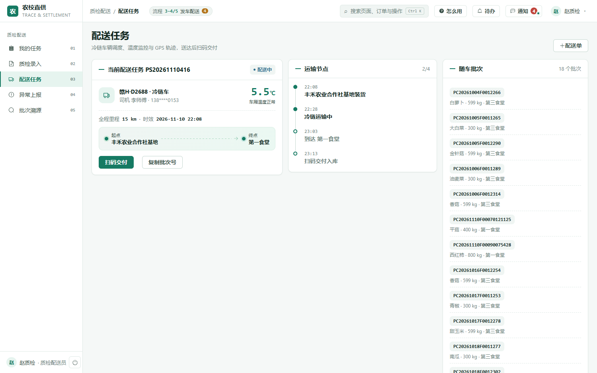

这份手册按「你是谁 → 你负责哪一段 → 每一步点哪里 → 做完谁接手」写。全部截图和数据都取自系统当前真实运行状态，不是示意图。
它管的是一条链：食堂要买菜 → 农户供货 → 质检配送 → 验收入库 → 结算付款。链上每换一棒，单据就自动流转到下一个状态，并通知下一个该干活的人。四个人各管一棒，谁也不能跳步。
浏览器打开 http://localhost:5173。演示环境四个账号，密码统一 123456：
| 账号 | 角色 | 姓名 | 进来先看哪一页 |
|---|---|---|---|
| admin | 系统管理员 | 王管理 | 数据看板（全局态势 + 待办） |
| farmer24 | 农户 / 合作社 | 张大山（绿源蔬菜合作社） | 我的工作台 |
| purchaser01 | 食堂采购员 | 李建国（第一食堂） | 采购需求 |
| inspector01 | 质检配送员 | 赵质检 | 我的任务 |
登录页可以选角色：选了会校验账号身份，选错会被拦下；不选则由系统自动识别。这是为了防止拿农户账号进管理员页面。
每个角色第一次登录时会自动弹出「怎么用」面板（只弹一次，之后从顶栏 怎么用 随时打开）。面板里有四块内容，从上往下读：

你的职责：让这条链转得合规——审结算、处置预警、盯在途、审农户准入，并看住全平台经营指标。
| 步骤 | 你要做的事 | 点哪里 | 做完之后谁接手 |
|---|---|---|---|
| 1 阻塞 | 审核结算单：农户的货已入库、结算单已生成，按损耗扣款规则确认实结金额 | 结算审核 | 农户收款，采购员可评价 |
| 2 阻塞 | 处置食安预警：证照到期 / 质检不合格 / 价格异动 / 订单逾期 | 食安预警 | 农户信用分与匹配排名随之变化 |
| 3 | 跟进在途订单：卡在待质检 / 待配送 / 配送中的单子，能催办并看卡在哪一环 | 订单监管 | 卡点责任人收到定向催办 |
| 4 | 审核农户准入：未认证的农户不能上架货源 | 农户/合作社管理 | 农户可发布货源、参与报价 |
| 5 | 看经营态势：采购额、损耗率、合格率、供应商排名 | 数据看板 | 数据来自全平台真实业务表 |
你的职责：把货供上来——维护货源、响应需求、接单发货；货进食堂后等结算收款。

| 步骤 | 你要做的事 | 点哪里 | 做完之后谁接手 |
|---|---|---|---|
| 1 | 把今天能供的菜挂上去：品类、可供数量、单价、可供日期；已售罄的补货或下架 | 货源管理 | 进入采购员「货源大厅」与智能匹配候选池 |
| 2 | 去需求大厅报价：食堂发出的需求都在这，报价后由采购员横向比价 | 需求大厅 | 中标即生成采购单，你会收到通知 |
| 3 阻塞 | 确认接单：写清预计发货时间，不接要说明原因 | 订单管理 → 待接单 | 你发货后 → 质检配送员接手抽检 |
| 4 阻塞 | 备货发货：按订单数量备货，发货时绑定批次号 | 订单管理 → 已接单 | 质检员抽检，合格才允许配送 |
| 5 | 查结算与收入：实秤数量、损耗扣款、实结金额，可导出对账单 | 结算与收入 | 管理员审核后货款到账 |
你的职责：把菜买回来——提需求、选供应商、验收入库；最后给这一单打分，决定农户下次还能不能被优先匹配。
| 步骤 | 你要做的事 | 点哪里 | 做完之后谁接手 |
|---|---|---|---|
| 1 | 提出采购需求：品类、数量、期望价、到货时间 | 采购需求 | 系统推给匹配的农户，农户报价 |
| 2 | 选货源 / 智能匹配：按品类价格信用筛，或看五因子推荐 | 货源大厅 / 智能匹配 | 选定后生成采购单，农户收到通知 |
| 3 | 跟单到货：接单、发货、质检、配送各环节，卡住自动催办 | 我的订单 | 到货后由你验收 |
| 4 阻塞 | 实秤验收入库：当场过秤录实收数量，系统按损耗算扣款与结算金额 | 入库确认 | 生成结算单交管理员审核，库存自动增加 |
| 5 | 评价本次供货：质量、新鲜度、配送、服务打分 | 采购评价 | 评价进农户信用分，影响下次匹配排名 |

页面右上角直接写着公式：综合得分 = 0.20×品类 + 0.25×价格 + 0.15×数量 + 0.25×信用 + 0.15×距离/历史，权重和 = 1.00。所以信用分低的农户价格再便宜也排不到前面，这是有意的：食安优先于省钱。权重可在「系统参数配置」调整。
你的职责：把关这批货能不能进食堂——抽检判定、发车配送、冷链监控，不合格整批拦下。
| 步骤 | 你要做的事 | 点哪里 | 做完之后谁接手 |
|---|---|---|---|
| 1 阻塞 | 领质检任务：农户发货后单子进入待质检，这里是今天要检的批次 | 我的任务 | 取一批进入质检录入 |
| 2 阻塞 | 录入质检结论：按标准项填实测值，系统自动判定并存证哈希 | 质检录入 | 合格→配送；不合格→整批驳回 + 食安预警 |
| 3 阻塞 | 发车配送：安排车辆司机，记录车牌与冷链起点温度 | 配送任务 | 订单转「配送中」，采购员可看实时轨迹 |
| 4 | 在途跟踪与交付：看温度是否超标、路线是否偏离；到食堂扫码交付 | 配送任务 | 采购员实秤入库 |
| 5 | 异常上报：温度超标、破损、迟到、现场质量问题，当场登记入预警 | 异常上报 | 管理员在预警页处置并留痕 |

这是库里一张真实订单：昌江食用菌基地 → 第三食堂，芹菜 180 kg，¥468.00。四个角色接力用了 8 小时，中途还真出了一次损耗超标。
| 时间 | 发生了什么 | 谁做的 |
|---|---|---|
| 10-23 11:59 | 订单创建：下单 180 kg · ¥468.00 | 采购员（由需求定标或直接下单） |
| 10-23 15:59 | 到货质检：抽检 2 kg，结论合格 | 质检配送员 |
| 10-23 16:59 | 发车配送：赣H·D2867 / 钱师傅，车厢 6.0℃ | 质检配送员 |
| 10-23 17:59 | 扫码交付：配送单 PS20261023404 | 质检配送员 |
| 10-23 18:59 | 验收入库：实收 165.6 kg，损耗 14.4 kg | 采购员（实秤） |
| 10-23 19:59 | 生成结算单 JS20261023388：应结 ¥468.00 − 扣款 ¥37.44 = 实结 ¥430.56 | 系统生成 → 管理员审核 |
这张单在系统里点开的原话是这样的（不是编的，来自单据工作台）：
| 状态码 | 显示 | 此刻该谁动 | 动了之后变成 |
|---|---|---|---|
| 10 | 待接单 | 农户 | 20 已接单 |
| 20 | 已接单 | 农户（发货、绑批次） | 30 待质检 |
| 30 | 待质检 | 质检配送员 | 40 质检合格待配送 / 41 不合格已驳回 |
| 40 | 质检合格待配送 | 质检配送员（发车） | 50 配送中 |
| 50 | 配送中 | 质检配送员（扫码交付） | 60 已送达待验收 |
| 60 | 已送达待验收 | 采购员（实秤入库） | 70 已入库 |
| 70 / 80 | 已入库 / 待结算 | 管理员（审核结算） | 90 已结算 |
| 90 / 100 | 已结算 / 已完成 | 采购员（评价）；100 为归档态 | — |
| 99 | 已取消 | — | — |
状态列是这个系统的「红绿灯」：你只需要找自己该负责的那一两个状态，其余状态的单子既不该你动，也动不了（按钮会按角色裁剪）。
| 问题 | 答案 |
|---|---|
| 为什么有些页面我看不到？ | 左侧菜单由角色决定：农户 7 页、采购员 8 页、质检员 5 页、管理员 11 页。看不到 = 这块不归你负责，不是权限出错。 |
| 为什么有些单子我看不到？ | 数据也按角色隔离：农户只看自己的订单，采购员只看本食堂，管理员看全平台。越权访问会被后端拦成 403，不是前端藏起来。 |
| 点通知 / 待办之后会怎样？ | 直接打开这张单的「具体问题 + 业务时间线 + 你能做的动作」，不用再去列表里翻找。 |
| 按钮是灰的 / 点不动？ | 两种原因：① 这张单当前状态不该你动；② 不满足前置条件（如没绑批次不能发车）。灰按钮旁边一般写着原因。 |
| 损耗扣款怎么算的？ | 损耗率 = (下单量 − 实收量) ÷ 下单量；扣款 = 损耗量 × 单价。阈值默认 5%，可在系统参数配置里改。 |
| 数据是实时的吗？ | 通知与动态用 SSE 推送，断线自动退回 15 秒轮询；表格数据在进入页面时拉取，跨角色操作会触发刷新。 |
| 导出在哪？ | 各列表页右上角有「导出」；数据看板的报表是多工作表的 Excel（概览、订单、品类、供应商各一页），不再挤在一个标签页里。 |
| KPI 数字和明细对不上？ | 点 KPI 卡片会打开「指标分析」而不是复制页面表格：上面是口径说明（比如「今日已检」= 今天 inspect_time 的记录），下面是构成分析和明细，最多 50 行并标注真实条数。 |